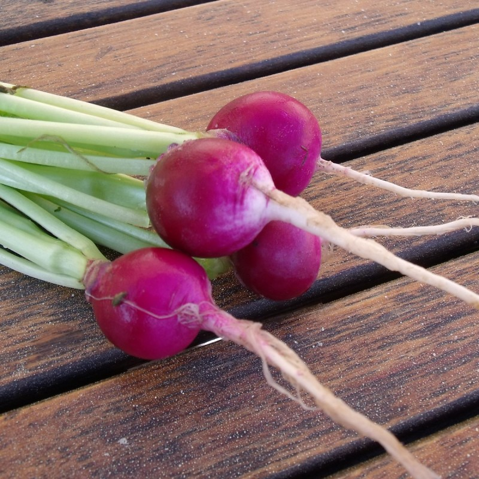
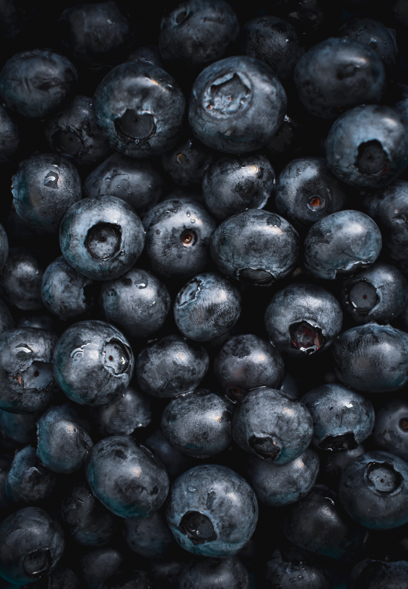
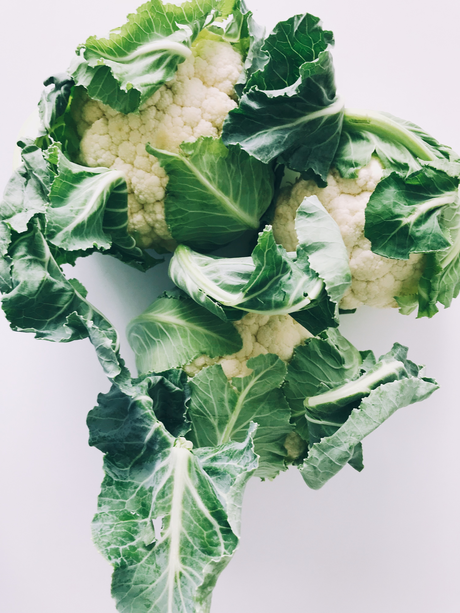

Nos produits de saison

Godet de 9 cm. Très précoce, le buisson est de moyenne vigueur mais produit de nombreuses myrtilles. Les fruits sont petits, noirs, à la saveur acidulée, rappelant le goût de la myrtille sauvage.

Godet de 9 cm. Très précoce, le buisson est de moyenne vigueur mais produit de nombreuses myrtilles. Les fruits sont petits, noirs, à la saveur acidulée, rappelant le goût de la myrtille sauvage.

Calendrier des saisons
Voir tous nos produits
Godet de 9 cm. Très précoce, le buisson est de moyenne vigueur mais produit de nombreuses myrtilles. Les fruits sont petits, noirs, à la saveur acidulée, rappelant le goût de la myrtille sauvage.
Nos conseils et suggestions

Chou-fleur Merveille de toutes saisons
• Exposition : Ensoleillé
• Cycle : plante vivace
• Climat : Tempéré et chaud
• Délai de rétractation : Produit périssable
• Hauteur du plant : 10 à 30 cm. Un jeune plant vous assure une meilleure reprise qu'un gros sujet

Carotte Amsterdam 2 Bio
• Exposition : Ensoleillé
• Facteur lunaire : Priviliégier les semis en lune décroissante
• Famille : brassicacées
• Cycle : plante annuelle
• Climat : tempéré
• Nombre moyen de graines au gramme : 110

Pois croquant Delikett
• Exposition : Ensoleillé
• Facteur lunaire : Priviliégier les semis en lune décroissante
• Famille : brassicacées
• Cycle : plante bisannuelle
• Climat : tempéré ou doux
• Nombre moyen de graines au gramme : 250
Qui
sommes
nous ?
La Bonne Graine est une graineterie indépendante, spécialiste de la vente de graines en ligne, depuis 2008.
Véritables amoureux du jardin, et plus particulièrement de la culture potagère, nous avons souhaité faire de notre passion notre métier et vous la faire ainsi partager.
Nous proposons des graines de toute sorte (potagères, aromatiques, gazon, fleurs), mais aussi des bulbes, des plants de pommes de terre ou des légumes anciens ou originaux.
En savoir plus S'inscrire à la Newsletter